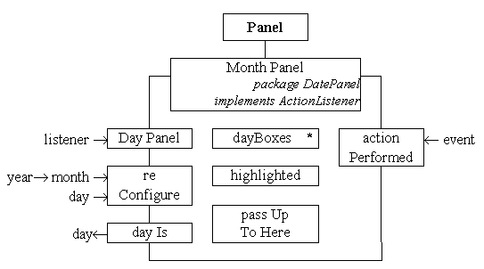

The MonthPanel class - class diagram

The MonthPanel class encapsulates an iteration of dayBox instances all of which register the MonthPanel instance as their listener using its public actionPerformed() action to pass events to it. It also maintains knowledge of which of the boxes is currently highlighted. Its constructor requires a listener to be passed to it which it stores in its passUpToHere attribute and to which it dispatches events when the user selects one of the dates.
The reConfigure() action will layout the MonthPanel as appropriate for the year and month supplied as arguments with the day indicated highlighted. The dayIs() action returns the currently selected day.